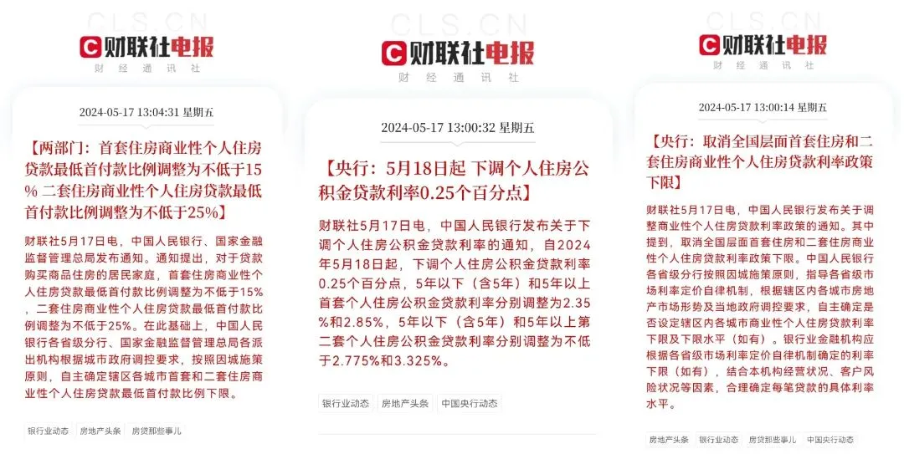

史诗级救市
“史诗级”救市
三条救市政策一口气来袭:

我个人是结合着看:
首先是降低首付款，让更多人能够得着上车的门槛。 降低首付这招，对北京、上海这类少数大城市有效果 ，绝大多数城市效果不大。
在这轮救市潮中，我曾设想过很多种可能，但最后能用的工具其实就那么些: 让居民部门再上一把杠杆 。
然后是取消房贷利率政策下限。如此，未来房贷利率会不断向下突破，从现在的3.75%、3.45%、3.25%向3%及以下突破，意味着 购房成本会不断下降 。
只是，贷款也是要还利息的，银行的钱又不是白给的。所以 这招要想效果好、使用得好，最重要的还是要稳就业和收入 。
在未来预期不明、不理想，随时可能失业的状态下，百姓是不会轻易上杠杆的，量入为出、节省开支才是正常选择。
你说准备all in？这种要么对未来预期很乐观，自身家底厚、收入丰厚，要么是个赌徒。
再结合地方政府“收储模式”的托底，可避免短时间内楼市断崖式、雪崩式下滑。只不过收储模式，我个人认为利好城投公司:
城投公司这几年拿地托底，手上堆积的土地大量未开发，抵押给银行套钱，风险会集中到银行。
现在如果根据收储的需求开发好，地方政府根据市场价收，再做公租房等收租。
则城投公司这一块的风险会有效释放，而地方政府也能完成KPI，银行能减小风险的堆积。
最重要的是，这个“收储模式”投入的资金有多少，准备搞多长时间？因为我们之前都没有遇到过这种模式，所以我用模型做了个测算:
如果是一两年，共3万亿及以下，效果几乎可以忽略不计；
如果是连续做3年，共5万亿左右，那市场效果会有所凸显，但止不住整体（中小城市居多）下行趋势；
如果连续做3年以上，共7-10万亿，那堪堪稳住楼市。
这个 测算主要是新房市场 ，通过收储影响供求关系。二手房市场主要还是看供求关系，不可控因素太多，更市场化。
至于收储的钱，发债，最终咱们全部都是买单者。当然了，债也是要还的，只不过是预支未来的钱到当下使用。
有人说内债不是债，要这么说，那钱还是钱吗？
看完这些鼓励百姓掏钱的举措，我在想， 啥时候能推出重磅举措，提高老百姓的收入？
我大概是病了，大白天的做这种梦。
就这样吧。
按日期浏览全部来源（同日按条目标识排序）